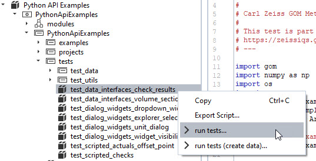
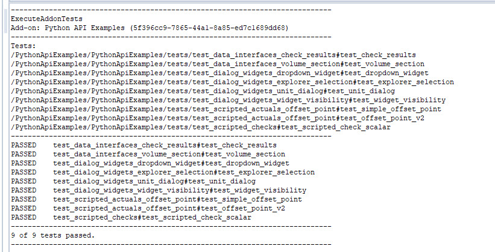
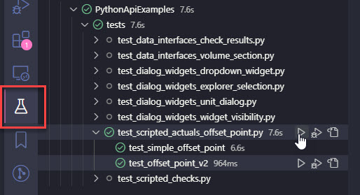
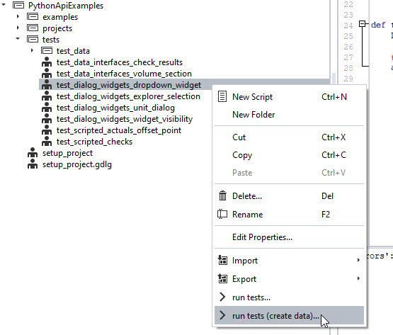
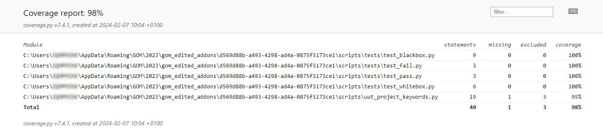
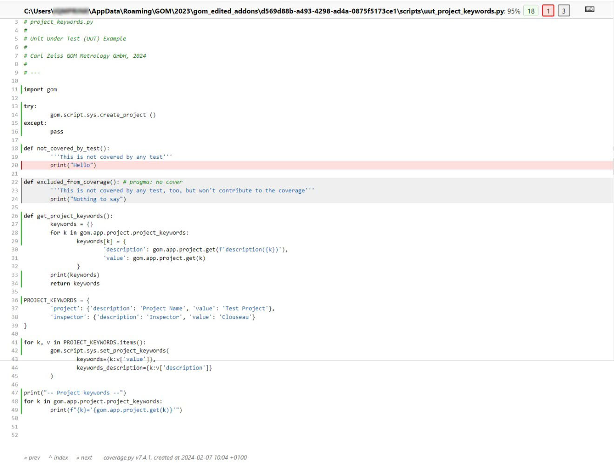

Testing add-ons
Note
You can use the Python API Examples add-on, which you can find in the store, as an example how to include tests in your add-on.
Why testing?
Testing your add-on is a crucial step for maintainability, especially when dealing with multiple software versions or updates. As manually testing your add-on is often tedious and time consuming, this how-to focuses on how to include automated tests in your add-on.
Automated tests are important when writing add-ons in Python because they help to ensure the code is running correctly and efficiently. Furthermore, they can be used to ensure that the code is compatible with different versions of the GOM Software, as well as on different machines. Finally, automated tests can be used to improve the overall performance of the add-on, as well as to ensure it meets the user’s requirements.
File structure
For test discovery to work, the file and folder structure of add-on tests needs to adhere to the following conventions, which are similar to the pyTests Conventions for Python test discovery.
test script file names start with
test_test scripts only contain functions with the prefix
test_.this means: no code outside of function definitions.
(optional, but recommended) all python test scripts reside in a separate
tests/directory of your add-ons top-level directory.

Exemplary file structure.
Note
In ZEISS INSPECT 2023, there is no need for a script at the top-level that executes all of your tests anymore. Instead, use the “Execute add-on tests” command (see Running tests).
Writing a test script
The following steps are required to write a new test script. The example code is taken from the Python API Examples add-on, which you can find in the store.
Create a test script: Create a Python file with the convention test_*.py. (Example:
PythonApiExamples/tests/test_data_interfaces_check_results)Import the module or package to be tested: Import the module or package that you want to test.
# Importing the example we want to test import PythonApiExamples.examples.data_interfaces.check_results_data_array as example
For this to work properly, the code that you want to test needs to be structured in functions as well. In this case, the functions
get_single_result_value()of thecheck_results_data_arrrayscript is imported. For more details, see also: How the examples are structured.Write test functions: Write test functions named with prefix
test_that define expected behavior. For simple checks for expected values, use theassertstatement like shown below. For more complex test data (like arrays or Element properties), see Working with test data.def test_check_results (): # Setup test project open_project('gom_part_test_project') test_element = gom.app.project.inspection['Surface comparison 1'] # Test definition expected_single_value = 2.0495047569274902 actual_result_value = example.get_single_result_value(test_element) assert actual_result_value == expected_single_value
That’s all it takes to create a simple test, which can now be run.
Running add-on tests
To run add-on tests, either a single one or multiple/all tests of an add-on, you can use the integrated script editor or VSCode. You can also execute tests from a script.
Using the script editor
To run the tests of a specific test script, use the context menu and select “Run tests…”.

You can use this context also on higher levels of the file hierarchy, e.g. to execute all tests of a folder or of the complete add-on.
Results will be shown in the log of the script editor.

Using VSCode
The ZEISS INSPECT add-on extension for VSCode was also extended to be able to run the test functions separately, or a collection of tests. To use this feature, navigate to the “Testing” workspace of VSCode and select the test items you want to run.

From scripts
You can use the execute_addon_tests command to run tests of an add-on. It takes the add-on UUID as mandatory argument. If solely given, all tests of the add-on are executed. You can also provide a list of test paths with the argument test_paths in form of relative paths inside the add-on. The suffix #test_<...> indicates, which test function to run.
results = gom.script.sys.execute_addon_tests_draft(addon_uuid='5f396cc9-7865-44a1-8a85-ed7c1689dd68')
results = gom.script.sys.execute_addon_tests_draft(addon_uuid='5f396cc9-7865-44a1-8a85-ed7c1689dd68',
test_paths=['/PythonApiExamples/tests/test_dialog_widgets_explorer_selection#test_explorer_selection'])
This will give you results as a list of tuples (test name, success, error message), which you can use for further evaluation.
Working with test data
In the namespace addon, there are two new classes: addon.ArrayDataTest and addon.ElementTest.
These classes can help you to create test data and compare the data of the current test run with the saved data. An example usage is given by test_data_interfaces_volume_section.py of the Python API Examples add-on.
from addon import ArrayDataTest, ElementTest
from PythonApiExamples.setup_project import open_project
# Importing the example we want to test
import PythonApiExamples.examples.data_interfaces.volume_section_image_data as example
def test_volume_section():
# Setup test project
open_project('volume_test_project')
test_element = gom.app.project.actual_elements['Plane X +40.00 mm']
#
# TEST
#
element_test = ElementTest('test_data/data_interfaces_volume_section_tokens.dat')
element_test.testElementValues(test_element, ['image_width', 'image_height', 'image_type'])
element_test.callTest()
raw_array = example.get_image_data_raw(test_element)
raw_array_test = ArrayDataTest('test_data/data_interfaces_volume_section_raw.dat')
raw_array_test.testArrayValues(raw_array)
rgb_array = example.get_image_data_rgb(test_element)
rgb_array_test = ArrayDataTest('test_data/data_interfaces_volume_section_rgb.dat')
rgb_array_test.testArrayValues(rgb_array)
You can see, that ElementTest can be used to access element properties easily. ArrayDataTest is used for numpy array comparison.
The path, where test data is stored, is supplied in the constructors (e.g. ElementTest('test_data/data_interfaces_volume_section_tokens.dat')).
If a relative path is given, like here, a resource inside the add-on is created / compared with. You can also use absolute paths to a file on your disk, but this is not recommended since not everyone that installed your add-on has access to this test data.
These classes will create the test data for you, if you run the test execution via “Run tests (create data)…”.

In a “normal” test run, data will be compared to the stored resources.
Running Add-on tests with code coverage
Sometimes not only the test results, but also the amount of code covered by the test suite is of interest. The Add-on TemplateUnittestCoverage / TemplateUnittestCoverage.addon provides a template for running unit tests and generating a code coverage report.
The test case structure is the same as described in the preceding sections, but to generate a coverage report, the tests must be run with the script run_tests.py while the Add-on is in editing mode.
With the provided example, the test results are shown as follows:
Test case folder: [...]/gom_edited_addons/d569d88b-a493-4298-ad4a-0875f5173ce1\scripts\tests
-- Project keywords --
user_project='Test Project'
user_inspector='Clouseau'
F
F.
{'user_project': {'description': 'Project Name', 'value': 'Test Project'}, 'user_inspector': {'description': 'Inspector', 'value': 'Clouseau'}}
.
======================================================================
FAIL: unittest.case.FunctionTestCase (test_blackbox)
----------------------------------------------------------------------
Traceback (most recent call last):
File "C:\Users\<USERID>\AppData\Roaming\gom\2023\gom_edited_addons\d569d88b-a493-4298-ad4a-0875f5173ce1\scripts\tests\test_blackbox.py", line 28, in test_blackbox
assert gom.app.project.get('user_project') == 'Test Projet' # intended to fail
AssertionError
======================================================================
FAIL: unittest.case.FunctionTestCase (test_fail)
----------------------------------------------------------------------
Traceback (most recent call last):
File "C:\Users\<USERID>\AppData\Roaming\gom\2023\gom_edited_addons\d569d88b-a493-4298-ad4a-0875f5173ce1\scripts\tests\test_fail.py", line 14, in test_fail
assert False
AssertionError
----------------------------------------------------------------------
Ran 4 tests in 0.441s
FAILED (failures=2)
The textual test coverage report is shown below:
Name Stmts Miss Cover
-------------------------------------------------------------------------------------------------------------------------------------------------------
C:\Users\<USERID>\AppData\Roaming\GOM\2023\gom_edited_addons\d569d88b-a493-4298-ad4a-0875f5173ce1\scripts\tests\test_blackbox.py 9 0 100%
C:\Users\<USERID>\AppData\Roaming\GOM\2023\gom_edited_addons\d569d88b-a493-4298-ad4a-0875f5173ce1\scripts\tests\test_fail.py 3 0 100%
C:\Users\<USERID>\AppData\Roaming\GOM\2023\gom_edited_addons\d569d88b-a493-4298-ad4a-0875f5173ce1\scripts\tests\test_pass.py 3 0 100%
C:\Users\<USERID>\AppData\Roaming\GOM\2023\gom_edited_addons\d569d88b-a493-4298-ad4a-0875f5173ce1\scripts\tests\test_whitebox.py 6 0 100%
C:\Users\<USERID>\AppData\Roaming\GOM\2023\gom_edited_addons\d569d88b-a493-4298-ad4a-0875f5173ce1\scripts\uut_project_keywords.py 19 1 95%
-------------------------------------------------------------------------------------------------------------------------------------------------------
TOTAL 40 1 98%
HTML coverage report:
C:/Users/<USERID>/AppData/Roaming/gom/2023/gom_edited_addons/d569d88b-a493-4298-ad4a-0875f5173ce1\scripts\tests\coverage_html\index.html
The HTML coverage report summary shows the same information:

Clicking a module shows a detailed report with code lines marked as run (green), missing (red) or excluded (gray). A code section (single line or begin of block) can be excluded from the coverage report with # pragma: no cover.
